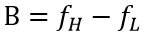
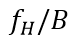
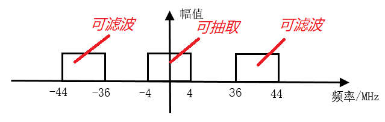
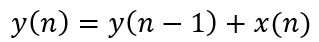
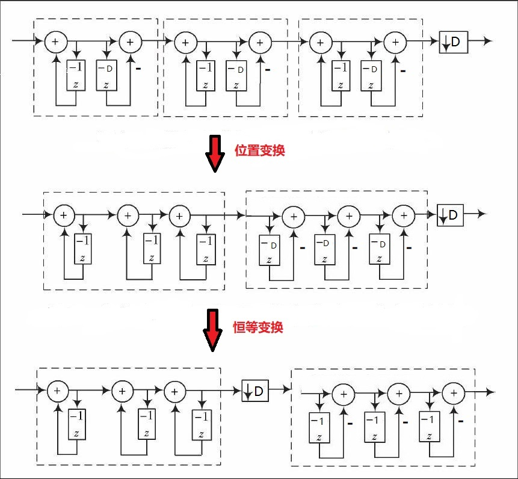
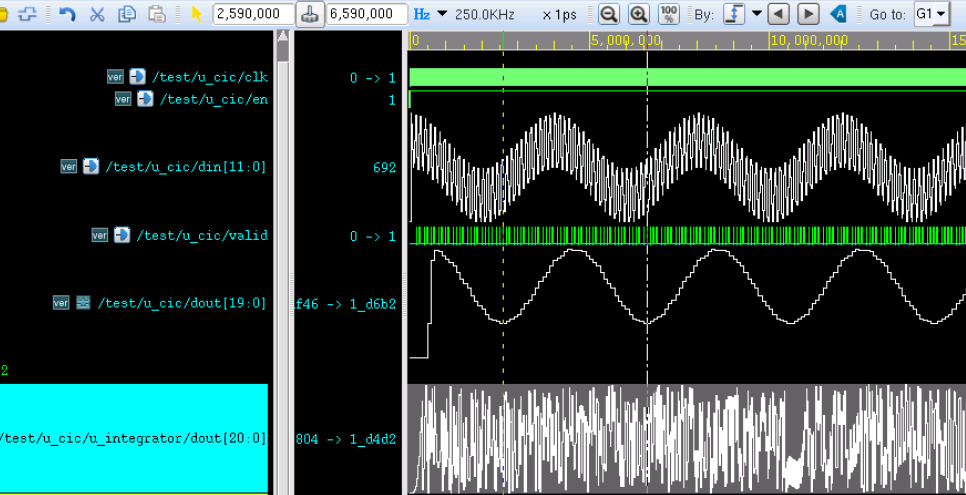
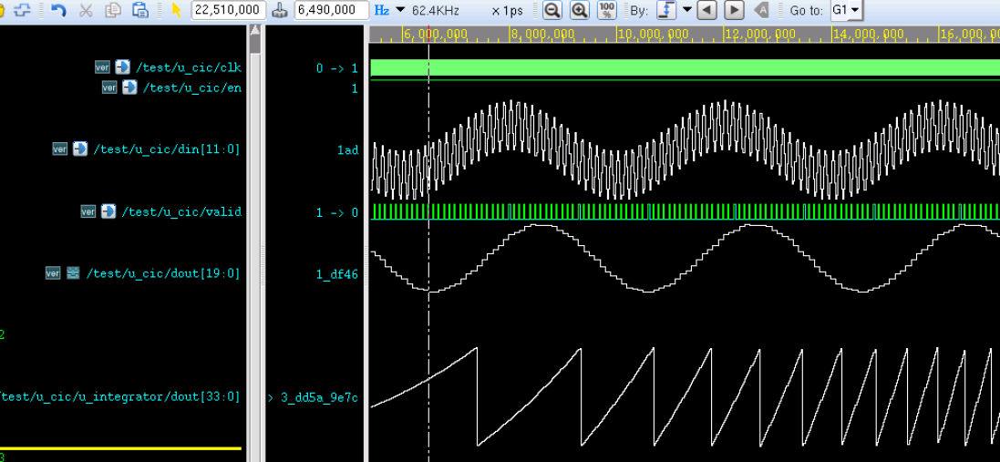

積分コムフィルタ（CIC、Cascaded Integrator Comb）は、一般的にデジタルダウンコンバージョン（DDC）およびデジタルアップコンバージョン（DUC）システムで使用されます。CIC フィルタは構造が単純で、乗算器がなく、加算器、積分器、レジスタのみで構成され、リソース消費が少なく、演算速度が高く、高速フィルタリングを実現でき、入力サンプリングレートが最も高い第一段でよく使用され、マルチレート信号処理システムで広く応用されています。
DDC 原理
DDC の動作原理
DDC は主にローカル発振器（NCO）、ミキサ、フィルタなどで構成され、次の図に示すとおりです。

DDC は中間周波数信号と発振器が生成する搬送波信号をミキシングし、信号の中心周波数を移します。その後、間引きフィルタリングを経て元の信号を復元し、ダウンコンバージョン機能を実現します。
中間周波数データのサンプリングでは、ADC（アナログデジタル変換器）が信号のSN比を確保できるように、非常に高いサンプリング周波数が必要です。デジタルダウンコンバージョン後、得られるベースバンド信号のサンプリング周波数は依然としてADCのサンプリング周波数であるため、データレートは非常に高くなります。このとき、ベースバンド信号の有効帯域幅は多くの場合すでにサンプリング周波数よりもはるかに小さいため、間引きとフィルタリングによってデータレートを変換し、サンプリングレートを下げ、リソースの無駄や設計の困難さを回避することは、DDCに不可欠な部分となります。
一方、CIC フィルタを用いたデータ処理は、DDCの間引きフィルタリング部分で最も一般的な方法です。
帯域通過サンプリング定理
DDC システムでは、入力された中間周波数搬送波信号は搬送波周波数に応じて周波数シフトされ、帯域通過信号が得られます。ここで依然としてナイキストサンプリング定理を採用する場合、すなわちサンプリング周波数を帯域通過信号の最高周波数の2倍とする場合、必要なサンプリング周波数は非常に高くなり、設計が複雑になります。このときは帯域通過サンプリング定理に従ってサンプリング周波数を決定できます。
周波数帯域が次のように制限された 連続帯域通過信号で、帯域幅は
連続帯域通過信号で、帯域幅は

。ここで 、ただし N は次の値以下の最大の正整数
、ただし N は次の値以下の最大の正整数
であり、サンプリング周波数が次の条件を満たす場合：
このとき、この信号はそのサンプリング値から完全に無歪みで再構成できます。
m=1 のとき、帯域通過サンプリング定理はナイキストサンプリング定理になります。
帯域通過サンプリング定理のもう1つの記述方法は、信号の最高周波数が信号帯域幅の整数倍である場合、サンプリング周波数は信号帯域幅の2倍より大きければよく、このときスペクトルエイリアシングは発生しません。
したがって、サンプリング周波数の半分は CIC フィルタの遮断周波数とみなすことができます。
DDC スペクトルシフト
例えば、帯域幅信号の中心周波数が60MHz、帯域幅が8MHzの場合、周波数範囲は56MHz〜64MHzとなり、mの取り得る値の範囲は0〜7です。m=1とすると、サンプリング周波数範囲は64MHz〜112MHzになります。
サンプリング周波数を80MHzとし、NCOの中心周波数を20MHzとします。以下では複素信号のスペクトルシフトの概略図について説明します。
（1）スペクトルの対称性を考慮すると、入力複素信号のスペクトル概略図は次のようになります。

（2）80MHzのサンプリング周波数でサンプリングした後、56〜64MHzの周波数帯域は-24〜-16MHzと136〜144MHz（サンプリング周波数より高いため除去されます）の周波数帯域に移されます。-64〜-56MHzの周波数帯域は-144〜-136MHz（サンプリング周波数より高いため除去されます）と16〜24MHzの周波数帯域に移されます。
サンプリング後の周波数帯域の分布は次のとおりです。

（3）信号が20MHz NCOの直交回路を通過した後、-24〜-16MHzの周波数帯域は-4〜4MHzと-44〜-36MHzの周波数帯域に移され、16〜24MHzの周波数帯域は-4〜4MHzと36〜44MHzの周波数帯域に移されます。次に示すとおりです。

（4）このとき、中間周波数入力信号はゼロ中間周波数ベースバンドに移されています。
-44〜-36MHzおよび36〜44MHzの帯域幅信号は不要であり、除去できます。-4〜4MHzのゼロ中間周波数信号のデータレートは依然として80MHzであるため、間引きを行ってデータレートを下げることができます。CICフィルタリングはまさにこのプロセスを実現するためのものです。
上記ではデジタル信号処理の内容を多く復習しましたが、これはいわばDDCというレンガを投げて、CICという玉を引き出すようなものです。
CIC フィルタ原理
単段 CIC フィルタ
フィルタの間引き率を D とすると、単段フィルタのインパルス応答は次のようになります。

これをz変換すると、単段CICフィルタのシステム関数は次のように得られます。

令

単段CICフィルタは、積分部分とコム部分という2つの基本構成要素からなることがわかります。構造図は次のとおりです。

積分器
積分器は単一極点のIIR（Infinite Impulse Response、無限長インパルス応答）フィルタであり、フィードバック係数は1です。その状態方程式とシステム関数はそれぞれ次になります。


コムフィルタ
コムフィルタはFIRフィルタであり、その状態方程式とシステム関数はそれぞれ次のとおりです。


間引き器
積分器の後には間引き器もあり、間引き率はコムフィルタの遅延パラメータと一致します。z変換の性質を利用して恒等変換を行い、間引き器を積分器とコムフィルタの間に移動することで、単段CICフィルタ構造が得られます。以下に示します。

パラメータの説明
CICフィルタの構造変換前のパラメータDは、コムフィルタの遅延または次数と理解できます。変換後、Dの意味は間引き率に変わり、このときのコムフィルタの遅延は1、すなわち次数は1です。
多くの学者は変数 M を導入して、コムフィルタの各段の遅延を表します。この場合、コム部分の遅延は1ではなくなります。すると、コムフィルタのシステム関数は次のようになります。

実のところ、DM を全体として単段フィルタの遅延、あるいは間引き率と理解しても構いません。実現方法や構造は異なるかもしれませんが、最終的な結果は同じです。今回の設計では、単段フィルタの遅延はすべて M=1 であり、すなわち間引き率とフィルタ遅延は同じです。
多段 CIC フィルタ
単段CICフィルタは阻止帯域減衰が比較的低いため、フィルタリング効果を高めるために、間引きフィルタリングでは多段CICフィルタをカスケード接続した構造がよく採用されます。
多段を直接カスケード接続したCICフィルタは、設計とリソースの面で最適な方法ではないため、その構造を調整する必要があります。次に示すように、積分器とコムフィルタをそれぞれ1つのグループに移動し、間引き器をコムフィルタの前に移動します。先に間引きを行ってからフィルタリングを行うことで、データ処理の長さを短縮し、ハードウェアリソースを節約できます。

もちろん、カスケード数が大きいほどサイドローブ抑制は良くなりますが、通過帯域内の平坦度も劣化します。したがって、カスケード数は多すぎない方がよく、通常は最大5段です。
CIC フィルタ設計
設計の説明
CICフィルタは本質的には単純なローパスフィルタであり、遮断周波数はサンプリング周波数を間引き率で割った後の半分です。入力データ信号は依然として7.5MHzと250KHzで、サンプリング周波数は50MHzです。間引き率を5に設定すると、遮断周波数は5MHzとなり、7.5MHzより小さいため、7.5MHzの周波数成分を除去できます。設計パラメータは次のとおりです。
输入频率： 7.5MHz 和 250KHz 采样频率： 50MHz 阻带： 5MHz 阶数： 1（M=1） 级数： 3（N=3）
積分時の中間データ信号のビット幅については、さまざまな場所で異なる計算方法が示されており、計算結果も大きく異なります。ここでは最もよく使用される計算方法をまとめます。

ここで、Dは間引き率、Mはフィルタ次数、Nはフィルタの段数です。間引き率は5、フィルタ次数は1、フィルタのカスケード数は3、入力信号のデータビット幅を12bitとし、対数部分は切り上げると、積分後にデータがオーバーフローしない中間信号のビット幅は21bitになります。
より余裕のある設計のために、フィルタ次数を構造変換前の多段CICフィルタの直接型構造として解釈する場合、フィルタ次数は5と考えることができ、このとき中間信号の最大ビット幅は27bitになります。
積分器の設計
入力データの有効信号の制御に基づき、積分器は単純な累算を行うだけでよいですが、データのビット幅に注意してください。
実例
module integrator
#(parameter NIN = 12,
parameter NOUT = 21)
(
input clk ,
input rstn ,
input en ,
input [NIN-1:0] din ,
output valid ,
output [NOUT-1:0] dout) ;
reg [NOUT-1:0] int_d0 ;
reg [NOUT-1:0] int_d1 ;
reg [NOUT-1:0] int_d2 ;
wire [NOUT-1:0] sxtx = {{(NOUT-NIN){1'b0}}, din} ;
//data input enable delay
reg [2:0] en_r ;
always @(posedge clk or negedge rstn) begin
if (!rstn) begin
en_r <= 'b0 ;
end
else begin
en_r <= {en_r[1:0], en};
end
end
//integrator
//stage1
always @(posedge clk or negedge rstn) begin
if (!rstn) begin
int_d0 <= 'b0 ;
end
else if (en) begin
int_d0 <= int_d0 + sxtx ;
end
end
//stage2
always @(posedge clk or negedge rstn) begin
if (!rstn) begin
int_d1 <= 'b0 ;
end
else if (en_r[0]) begin
int_d1 <= int_d1 + int_d0 ;
end
end
//stage3
always @(posedge clk or negedge rstn) begin
if (!rstn) begin
int_d2 <= 'b0 ;
end
else if (en_r[1]) begin
int_d2 <= int_d2 + int_d1 ;
end
end
assign dout = int_d2 ;
assign valid = en_r[2];
endmodule
間引き器の設計
間引き器を設計する際は、積分器の出力データをカウントし、5データごとに間引けばよいです。
実例
#(parameter NDEC = 21)
(
input clk,
input rstn,
input en,
input [NDEC-1:0] din,
output valid,
output [NDEC-1:0] dout);
reg valid_r ;
reg [2:0] cnt ;
reg [NDEC-1:0] dout_r ;
//counter
always @(posedge clk or negedge rstn) begin
if (!rstn) begin
cnt <= 3'b0;
end
else if (en) begin
if (cnt==4) begin
cnt <= 'b0 ;
end
else begin
cnt <= cnt + 1'b1 ;
end
end
end
//data, valid
always @(posedge clk or negedge rstn) begin
if (!rstn) begin
valid_r <= 1'b0 ;
dout_r <= 'b0 ;
end
else if (en) begin
if (cnt==4) begin
valid_r <= 1'b1 ;
dout_r <= din;
end
else begin
valid_r <= 1'b0 ;
end
end
end
assign dout = dout_r ;
assign valid = valid_r ;
endmodule
コムフィルタの設計
コムフィルタは単純な1次FIRフィルタであり、各段のFIRフィルタはデータを1クロック遅延させてから減算するだけです。係数が±1であるため、乗算器は不要です。
実例
#(parameter NIN = 21,
parameter NOUT = 17)
(
input clk,
input rstn,
input en,
input [NIN-1:0] din,
input valid,
output [NOUT-1:0] dout);
//en delay
reg [5:0] en_r ;
always @(posedge clk or negedge rstn) begin
if (!rstn) begin
en_r <= 'b0 ;
end
else if (en) begin
en_r <= {en_r[5:0], en} ;
end
end
reg [NOUT-1:0] d1, d1_d, d2, d2_d, d3, d3_d ;
//stage 1, as fir filter, shift and add(sub),
//no need for multiplier
always @(posedge clk or negedge rstn) begin
if (!rstn) d1 <= 'b0 ;
else if (en) d1 <= din ;
end
always @(posedge clk or negedge rstn) begin
if (!rstn) d1_d <= 'b0 ;
else if (en) d1_d <= d1 ;
end
wire [NOUT-1:0] s1_out = d1 - d1_d ;
//stage 2
always @(posedge clk or negedge rstn) begin
if (!rstn) d2 <= 'b0 ;
else if (en) d2 <= s1_out ;
end
always @(posedge clk or negedge rstn) begin
if (!rstn) d2_d <= 'b0 ;
else if (en) d2_d <= d2 ;
end
wire [NOUT-1:0] s2_out = d2 - d2_d ;
//stage 3
always @(posedge clk or negedge rstn) begin
if (!rstn) d3 <= 'b0 ;
else if (en) d3 <= s2_out ;
end
always @(posedge clk or negedge rstn) begin
if (!rstn) d3_d <= 'b0 ;
else if (en) d3_d <= d3 ;
end
wire [NOUT-1:0] s3_out = d3 - d3_d ;
//tap the output data for better display
reg [NOUT-1:0] dout_r ;
reg valid_r ;
always @(posedge clk or negedge rstn) begin
if (!rstn) begin
dout_r <= 'b0 ;
valid_r <= 'b0 ;
end
else if (en) begin
dout_r <= s3_out ;
valid_r <= 1'b1 ;
end
else begin
valid_r <= 1'b0 ;
end
end
assign dout = dout_r ;
assign valid = valid_r ;
endmodule
トップレベルのインスタンス化
信号の流れに沿って積分器、間引き器、コムフィルタをそれぞれインスタンス化することで、最終的なCICフィルタモジュールを構成できます。
コムフィルタの最終出力ビット幅は一般に入力信号よりも少し小さくなります。ここでは17bitとします。もちろん、出力ビット幅は入力データのビット幅と完全に一致させることもできます。
実例
#(parameter NIN = 12,
parameter NMAX = 21,
parameter NOUT = 17)
(
input clk,
input rstn,
input en,
input [NIN-1:0] din,
input valid,
output [NOUT-1:0] dout);
wire [NMAX-1:0] itg_out ;
wire [NMAX-1:0] dec_out ;
wire [1:0] en_r ;
integrator #(.NIN(NIN), .NOUT(NMAX))
u_integrator (
.clk (clk),
.rstn (rstn),
.en (en),
.din (din),
.valid (en_r[0]),
.dout (itg_out));
decimation #(.NDEC(NMAX))
u_decimator (
.clk (clk),
.rstn (rstn),
.en (en_r[0]),
.din (itg_out),
.dout (dec_out),
.valid (en_r[1]));
comb #(.NIN(NMAX), .NOUT(NOUT))
u_comb (
.clk (clk),
.rstn (rstn),
.en (en_r[1]),
.din (dec_out),
.valid (valid),
.dout (dout));
endmodule
testbench
testbench は次のように作成します。主な機能は、250KHz と 7.5MHz の正弦波混合信号データを途切れることなく連続して入力することです。入力する混合信号データは matlab で生成することもできます。具体的な手順は『並列 FIR フィルタ設計』の節を参照してください。
実例
parameter NIN = 12 ;
parameter NMAX = 21 ;
parameter NOUT = NMAX ;
reg clk ;
reg rstn ;
reg en ;
reg [NIN-1:0] din ;
wire valid ;
wire [NOUT-1:0] dout ;
//=====================================
// 50MHz clk generating
localparam T50M_HALF = 10000;
initial begin
clk = 1'b0 ;
forever begin
# T50M_HALF clk = ~clk ;
end
end
//============================
// reset and finish
initial begin
rstn = 1'b0 ;
# 30 ;
rstn = 1'b1 ;
# (T50M_HALF * 2 * 2000) ;
$finish ;
end
//=======================================
// read cos data into register
parameter SIN_DATA_NUM = 200 ;
reg [NIN-1:0] stimulus [0: SIN_DATA_NUM-1] ;
integer i ;
initial begin
$readmemh("../tb/cosx0p25m7p5m12bit.txt", stimulus) ;
i = 0 ;
en = 0 ;
din = 0 ;
# 200 ;
forever begin
@(negedge clk) begin
en = 1 ;
din = stimulus[i] ;
if (i == SIN_DATA_NUM-1) begin
i = 0 ;
end
else begin
i = i + 1 ;
end
end
end
end
cic #(.NIN(NIN), .NMAX(NMAX), .NOUT(NOUT))
u_cic (
.clk (clk),
.rstn (rstn),
.en (en),
.din (din),
.valid (valid),
.dout (dout));
endmodule // test
シミュレーション結果
下図のシミュレーション結果からわかるように、CICフィルタを通過した後の信号は低周波信号（250KHz）のみとなり、高周波信号（7.5MHz）は除去されました。
ただし、波形はそれほど完璧ではありません。これは設計したカットオフ周波数や、データが連続して出力されないことなどに起因します。
このとき、積分器から出力されるデータ信号も非常に不規則であることがわかりました。これはそのビット幅に関係しています。

積分器の出力データをより良く観察するために、そのビット幅を21bitから34bitに変更しました。シミュレーション結果は以下の通りです。
このとき、CICフィルタのデータ出力には実質的な変化は見られませんでしたが、積分器から出力されるデータ信号は鋸歯状、すなわち梳状（コーム状）になります。これが梳状フィルタ（コームフィルタ）という名前の由来です。

クリックしてノートを共有
<p style="font-size:14px;">ノートは本記事の内容を拡張したものである必要があります！</p><br> <p style="font-size:12px;"><a href="../tougao.html" target="_blank">記事の投稿は、こちらをクリック</a></p> <p style="font-size:14px;"><a href="./runoob-user-test-intro.html" target="_blank">登録招待コードの取得方法</a></p> <h3 class="text-muted"><i class="fa fa-info-circle" aria-hidden="true"></i> ノートを共有する前に<a href=".." class="runoob-pop">ログイン</a>が必要です！</h3> <p><a href="./runoob-user-test-intro.html" target="_blank">登録招待コードの取得方法</a></p>